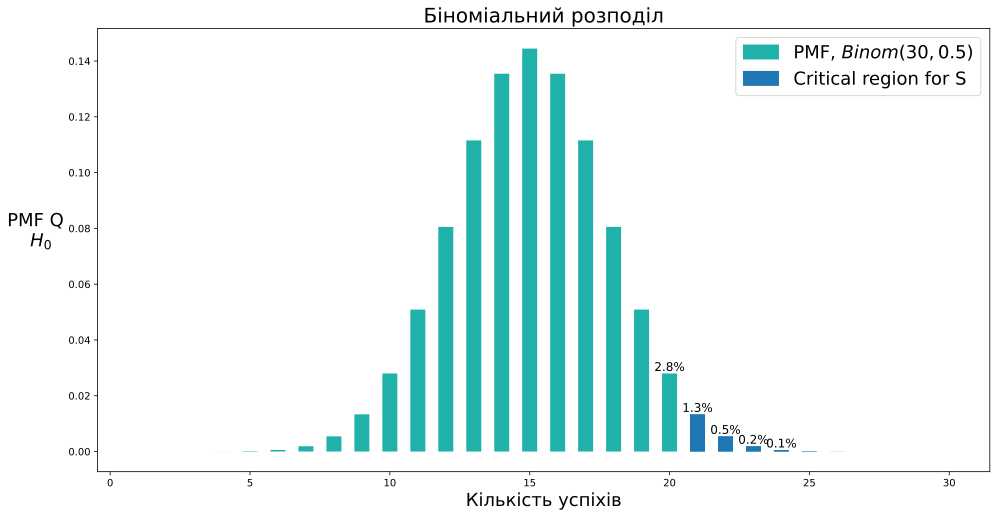
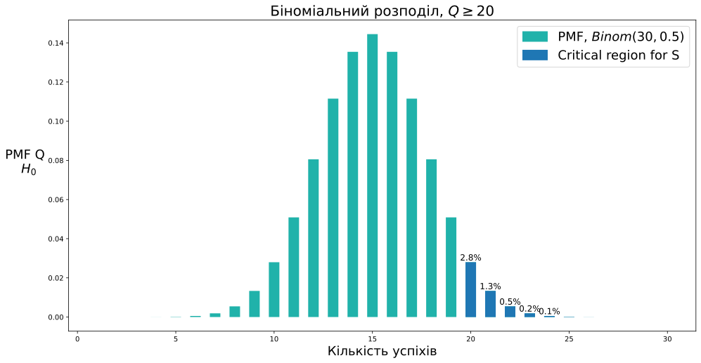
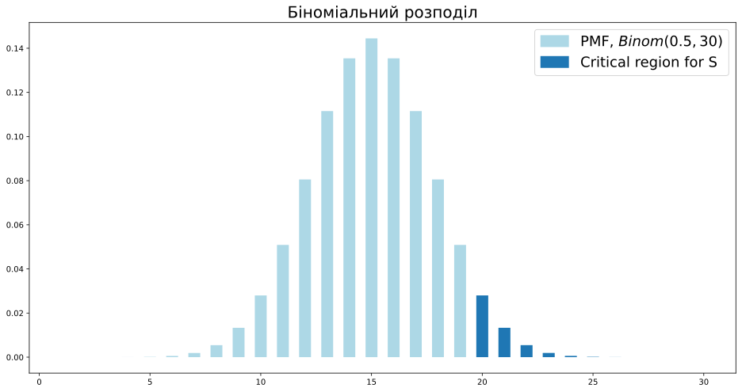
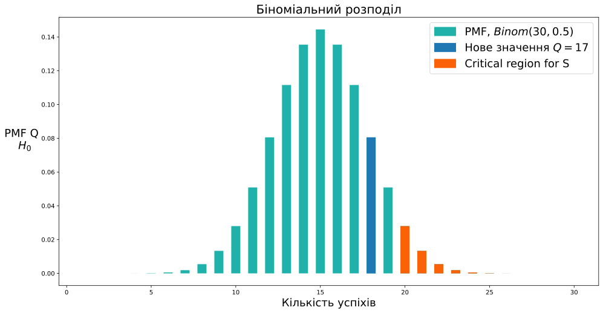
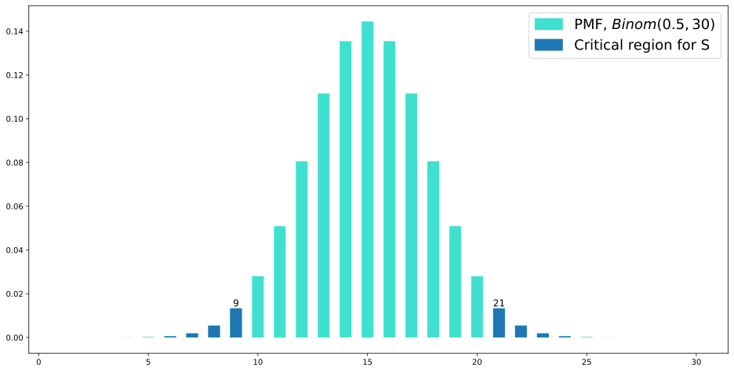
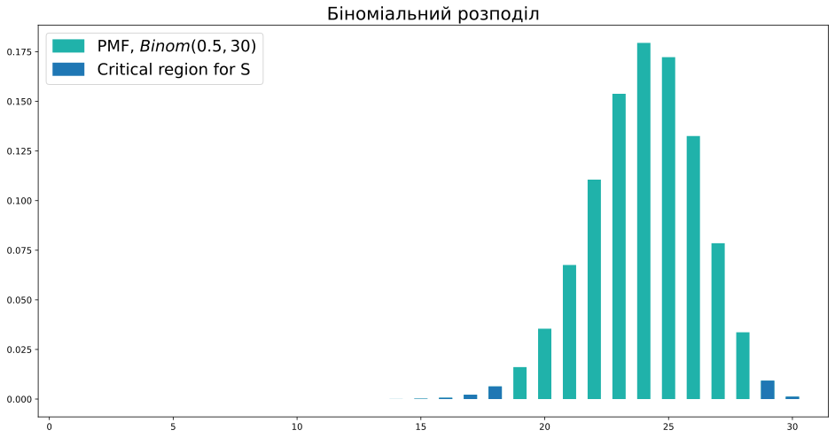

Статистичний критерій
Прикладний статистичний аналіз
Ігор Мірошниченко
КНУ імені Тараса Шевченка, ФІТ
Про мене

- Мірошниченко Ігор Вікторович
- кандидат економічних наук, доцент
- доцент кафедри технологій управління, ФІТ, КНУ імені Тараса Шевченка
- доцент кафедри математичного моделювання та статистики, ІІТЕ, КНЕУ
- викладач Київської школи економіки
- викладач Міжнародного інституту бізнесу (MBA)
DataCamp Group
DataCamp Group

DataCamp Group

Як долучитися?
- Зареєструйтесь на DataCamp
- Приєднатися до телеграм-каналу
Data Mirosh - Приєднайтесь до класу за посиланням
Примітка
Клас буде активний до 11 жовтня 2024 року, після чого буде буде відкрито наступний потік. Слідкуйте за оновленнями.
Статистичний критерій
Startup ідея
Але користувачі можуть відмовитися від замовлення.
Інвестори готові допомогти, якщо шанс відмови < 50%.
Що робити?
Проводимо експеримент
- Знайшли 30 клієнтів
- 19 оплатили замовлення
Модель та спостереження
Ми не можемо протестувати продукт на всіх, але можемо зібрати вибірку з генеральної сукупності та поспостерігати частку успіхів.
- Аудиторія, яка скористається нашим сервісом — генеральна сукупність, \(\xi \sim \text{Bernoulli}(\mu)\).
- Частка успішних операцій — \(\mu\).
- Вибірка з генеральної сукупності — \(\xi_1, \xi_2, \ldots, \xi_{30}\).
Постановка задачі
- Визначаємо гіпотези:
- \(H_0: \mu = 50%\)
- \(H_1: \mu > 50%\)
- Визначаємо статистику критерію:
\(Q = \xi_1 + \xi_2 + \ldots + \xi_{30} \underset{H_0}{\sim} \text{Binomial}(30, 0.5)\)
- Визначаємо критерій:
- якщо \(Q \geq 21\): відхиляємо \(H_0\)
- інакше: не відхиляємо \(H_0\)
Але чому саме 21?
- Визначаємо статистичну значущість:
- \(\alpha\) — статистична значущість критерію, 5%.
- FPR (False Positive Rate, частота хибнопозитивних спрацьовувань) — ймовірність відхилення \(H_0\) при її дійсності.
\(FPR \leq \alpha\)
\[FPR = 1.3\% + 0.5\% + 0.2\% + 0.1\% \approx 2.1\% < 5\%\]
21 vs. 20

\(FPR_{21} = 1.3\% + 0.5\% + 0.2\% + 0.1\% \approx 2.1\% < 5\%\)
\(FPR_{20} = 2.8\% + 1.3\% + 0.5\% + 0.2\% + 0.1\% \approx 4.9\% < 5\%\)
Рішення
- якщо \(Q \geq 20\): відхиляємо \(H_0\)
- інакше: не відхиляємо \(H_0\)
То яке рішення?
- Знайшли 30 клієнтів
- 19 оплатили замовлення
Статистичний критерій та Python
Біноміальний розподіл
- Статистика \(Q\) має біноміальний розподіл: \(Q \sim \text{Binomial}(30, 0.5)\).
- Функція ймовірності дискретного розподілу \(p_{\xi}(x)\) — ймовірність того, що випадкова величина \(\xi\) прийме значення \(x\).
import numpy as numpy
# координата
x_grid = numpy.arange(1, 31)
# висота стовпців на графіку
probs = binom_h0.pmf(x_grid)
pyplot.figure(figsize=(16, 8))
# будуємо вертикальні стовпці від 0 до ймовірності
pyplot.vlines(x_grid, 0, probs, linewidth=15.0, color='lightblue', label='PMF, $Binom(0.5, 30)$')
# окремо зобразимо критичну область критерію
crit_reg = x_grid >= 20
pyplot.vlines(x_grid[crit_reg], 0, probs[crit_reg], linewidth=15.0, label='Critical region for S')
pyplot.title('Біноміальний розподіл', fontsize=20)
pyplot.legend(fontsize=18)
pyplot.show()
Ймовірність критичної області
Рахуємо суму ймовірностей успіхів в критичній області.
А якщо \(Q \geq 19\)?
Тоді ймовірність помилки вже навіть більша 10%, що зовсім нам не підходить.
Кумулятивна функція розподілу
Кумулятивна функція розподілу \(F_{\xi}(x) = P(\xi \leq x)\) — ймовірність того, що випадкова величина \(\xi\) прийме значення не більше \(x\).
У Python це функція cdf (cumulative distribution function)
Ймовірність отримати 19 або менше успіхів у нашому завданні \(\geq 95\). А оскільки \(P(\xi \leq 19) + P(\xi \geq 21) = 1\), можемо обчислити рівень значущості нашого критерію.
Квантиль
Щоб вибрати критичну область для критерію, ми хотіли б знайти точку, площа стовпців праворуч від якої була б \(5\%\). Тобто площа стовпців ліворуч — \(95\%\). Така точка називається квантилем. \[u_p(\xi) = \{x | F_{\xi}(x) = p\}\]
Але при \(p = 0.95\) і нашому біноміальному розподілі, такої точки немає. Ми з’ясували, що є точка, праворуч від якої площа \(0.494\), а в наступної вже \(0.1\). Щоб визначити квантиль у цьому випадку, модифікуємо визначення:
Квантиль \(u_p(\xi) = \{x | F_{\xi}(x) \geq p\}\) — величина, яку \(\xi\) не перевищує з імовірністю хоча б \(p\).
Квантиль: приклад
Для величини \(\xi \sim Bin(30, 0.5)\) порахуємо \(0.95\)-квантиль. Розв’яжемо завдання просто підбором.
\[P(\xi \leq 18) \approx 0.9\]
\[P(\xi \leq 19) \approx 0.951\]
\[P(\xi \leq 20) \approx 0.97\]
У Python квантиль можна порахувати через функцію ppf (percent point function)
Власна функція критерію
Як тепер підібрати \(C\) для будь-яких \(n, \mu\) та будь-якого рівня значущості \(\alpha\)?
- Потрібно знайти \(C\), таке що \(P(Q \geq C) \leq \alpha\).
- Тобто потрібно \(P(Q < C) \geq 1 - \alpha\)
- \(Q\) приймає тільки цілі значення: \(P(Q \leq C - 1) \geq 1 - \alpha\), або \(P(Q \leq C) \geq 1 - \alpha\).
- Отже, з визначення квантилі, \(C - 1 = u_{1 - \alpha}\)
- Значить \(C = u_{1 - \alpha} + 1\)
def make_binom_criterion(n, mu=0.5, alpha=0.05):
'''Будує критерій для задачі з доставкою
Параметри:
n: кількість доставок в експерименті
mu: ймовірність успіху в нульовій гіпотезі
alpha: рівень значущості критерію
Повертає:
C для критерію S = {Q >= C}
'''
binom_h0 = binom(n=n, p=mu)
q = binom_h0.ppf(1 - alpha)
return q + 1Власна функція критерію: приклад
def make_binom_criterion(n, mu=0.5, alpha=0.05):
'''Будує критерій для задачі з доставкою
Параметри:
n: кількість доставок в експерименті
mu: ймовірність успіху в нульовій гіпотезі
alpha: рівень значущості критерію
Повертає:
C для критерію S = {Q >= C}
'''
binom_h0 = binom(n=n, p=mu)
q = binom_h0.ppf(1 - alpha)
return q + 1
Критичне значення \(C = 20\), тоді критерій виглядає так:
\[S = \{Q \geq 20\}\]
Додатковий приклад
- Кількість доставок — 50
- Достатня ймовірність успіху — 0.1, тобто якщо робота кур’єра коштує 100₴, то вартість доставки — 1000₴
\(p\)-значення
\(p\)-значення
\(p\)-значення (\(p\)-value) — ймовірність отримати результат, який більш екстремальний, ніж наші спостереження, при умові, що нульова гіпотеза \(H_0\) справджується.
graph TD
A["n = 30 \n H0: μ = 0.5 \n H1: μ > 0.5 \n α = 0.05"] --> B["Якщо Q >= 20: \n відхиляємо H0"]

- \(p > \alpha \equiv\) \(q\) поза критичною областю \(\equiv\) не відхиляємо \(H_0\).
- \(p \leq \alpha \equiv\) \(q\) в критичній області \(\equiv\) відхиляємо \(H_0\).
Статистичний критерій для всіх!
Інакше: не відхиляємо \(H_0\).
\(p\)-значення в Python
print(f'p-значення = {pvalue_binom(30, 0.5, 19):.3f} {"<= 0.05" if pvalue_binom(30, 0.5, 19) <= 0.05 else ">= 0.05"}')p-значення = 0.100 >= 0.05
Двосторонній критерій
Двосторонній критерій
Чи впливає колір авто на дотримання ПДР?
- \(Q = \xi_1 + \xi_2 + \ldots + \xi_{n}\)
- \(H_0: \mu = 0.5\)
- \(H_1: \mu \neq 0.5\)
- \(\alpha = 0.05\)

Якщо \(q \geq 21\) або \(q \leq 9\), то відхиляємо \(H_0\).
\(p\)-значення для двостороннього критерію
Критерій має вигляд \[S = \{|Q(\xi) - 15|\ \geq C\}\]
def pvalue_two_sided_sum(n, q):
'''Обчислює pvalue для задачі з доставкою для mu = 0.5 і двосторонньої альтернативи
Параметри:
n: кількість доставок в експерименті
q: кількість успішних доставок
Повертає:
pvalue для критерію S = {|Q - 15| >= C}
'''
binom_h0 = binom(n=n, p=0.5)
diff = numpy.abs(q - 15)
# дивимося більш екстремальні відхилення з правого боку
right_sq = 1 - binom_h0.cdf(15 + diff - 1)
# дивимося більш екстремальні відхилення з лівого боку
left_sq = binom_h0.cdf(15 - diff)
return left_sq + right_sq # або просто 2 * right_sq для симетричного розподілу
Несиметричний розподіл

Для того, щоб побудувати двосторонній критерій, потрібно знайти ліворуч та праворуч області, площа яких становить не більше, ніж \(\frac{\alpha}{2}\).
Несиметричний розподіл: критична область
def two_sided_criterion_nonsym(n, mu, alpha):
'''Будує двосторонній критерій для несиметричної задачі з доставкою
Параметри:
n: кількість доставок в експерименті
mu: імовірність успіху в нульовій гіпотезі
alpha: рівень значущості критерію
Повертає:
C1, C2 для критерію S = {Q <= C1 або Q >= C2}
'''
binom_h0 = binom(n=n, p=mu)
# аналогічно односторонньому критерію
c2 = binom_h0.ppf(1 - alpha/2) + 1
# за викладками вище
c1 = binom_h0.ppf(alpha/2) - 1
return c1, c2
Несиметричний розподіл: критерій
Отже, наш критерій для перевірки гіпотези
\[H_0: \mu = 0.8\] \[H_1: \mu \neq 0.8\]
виглядає так:
\[S = \{Q(\xi) \leq 18\} \cup \{Q(\xi) \geq 29\}\]
Несиметричний розподіл: \(p\)-значення
Цей критерій — об’єднання двох критеріїв рівня значущості \(\frac{\alpha}{2}\), для кожного з яких можна порахувати \(p\)-значення.
Позначимо їх як \(p_1, p_2\).
Перший критерій відкидається при \(p_1 \leqslant \frac{\alpha}{2}\), другий при \(p_2 \leqslant \frac{\alpha}{2}\).
А наш об’єднаний, коли виконано одну з цих умов, тобто
\[ 2p_1 \leqslant \alpha \vee 2p_2 \leqslant \alpha \Leftrightarrow 2 \cdot \min(p_1, p_2) \leqslant \alpha \]
Несиметричний розподіл: \(p\)-значення Python
def pvalue_two_sided(n, q, mu=0.5):
'''Обчислює pvalue для двосторонньої альтернативи в задачі з доставкою
Параметри:
n: кількість доставок в експерименті
q: кількість успішних доставок
mu: ймовірність успіху при H0
Повертає:
pvalue для двостороннього критерію
'''
binom_h0 = binom(n=n, p=mu)
# рахуємо для лівої частини
pvalue_left = binom_h0.cdf(q)
# рахуємо для правої частини
pvalue_right = 1 - binom_h0.cdf(q - 1)
# обчислюємо формулу
return 2 * min(pvalue_left, pvalue_right)
Видно, що \(p\)-значення \(> 0.05\), отже, на рівні значущості \(0.05\) навіть \(28\) успіхів недостатньо, щоб відкинути ймовірність успіху в \(80\%\).
Дякую за увагу!